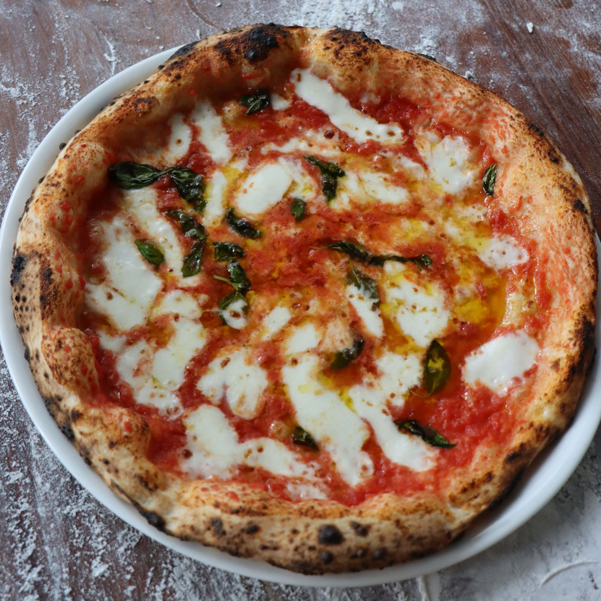

Italian Pizza

Description
Italian pizza is made with a thin dough topped with tomato sauce, fresh mozzarella, and simple ingredients like basil or olive oil. The flavors come from the quality of the fresh, natural ingredients used.
To prepare, spread the dough, add sauce, cheese, and toppings, then bake in a hot oven until golden. Serve hot and enjoy the perfect balance of crisp crust and melted cheese.
Ingredients
- 2 cups of flour
- 1/2 cup of water
- 1 tsp of yeast
- 1/2 tsp of salt
- 1 tbsp of olive oil
- 1/2 cup of tomato sauce
- 1 cup of fresh mozzarella
- Fresh basil leaves (optional)
- Toppings of choice (e.g., prosciutto, mushrooms, olives)
Steps
- Mix flour, water, yeast, salt, and olive oil to form a dough; let it rise for 1 hour.
- Preheat the oven to its highest temperature.
- Roll out the dough on a floured surface into a thin circle.
- Spread tomato sauce over the dough and add fresh mozzarella.
- Add toppings like basil or other desired ingredients.
- Bake for 8-12 minutes until the crust is golden and the cheese is bubbling.
- Serve hot and enjoy!